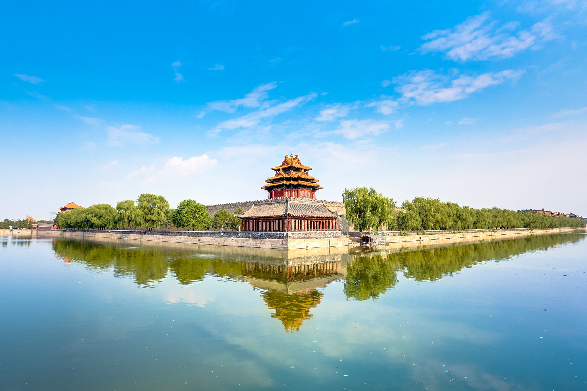
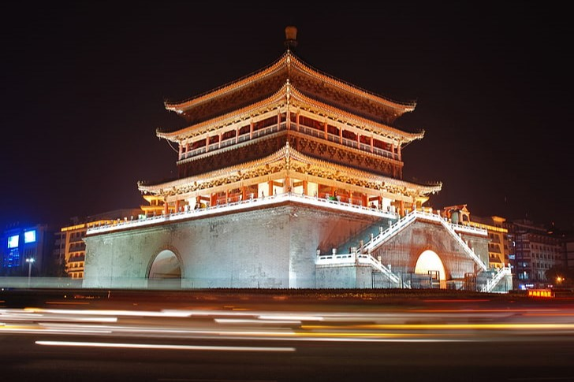

Beijing
Beijing, the capital of China, is a city rich in history and culture, known for its ancient architecture and modern developments.
- Culture:
- Beijing is famous for its traditional Peking opera, a unique art form that combines music, vocal performance, mime, and acrobatics.
- The city hosts numerous festivals, including the Chinese New Year celebrations, showcasing vibrant parades and cultural performances.
- History:
- Beijing has served as the political center of China for centuries, with landmarks like the Forbidden City reflecting its imperial past.
- The city played a significant role during the Ming and Qing dynasties, influencing the course of Chinese history.

Location: Tiananmen Square, The Great Wall, Summer Palace
- Getting There:
- Fly into Beijing Capital International Airport, the main access point for the city.
- High-speed trains connect Beijing to major cities like Shanghai and Xi'an.
- Public transportation, including subways and buses, is widely available for travel within the city.
- Climate:
- Beijing experiences a continental climate with hot summers and cold winters.
- Average winter temperatures can drop below -5°C (23°F).
- The best time to visit is during spring (April to June) and autumn (September to November) for pleasant weather.
Guilin
Guilin is renowned for its stunning karst landscape and the picturesque Li River, making it a paradise for nature lovers and photographers.
- Culture:
- The city is famous for its traditional Chinese painting and calligraphy, often inspired by the surrounding natural beauty.
- Guilin hosts various cultural festivals, including the Guilin International Tourism Festival, celebrating local traditions and arts.
- History:
- Guilin has a rich history dating back over 2,000 years, with ancient sites that reflect its cultural heritage.
- The region played a significant role in trade and agriculture, contributing to its historical significance in southern China.
Location: Li River, Reed Flute Cave, Longji Rice Terraces
- Getting There:
- Fly into Guilin Liangjiang International Airport, the main access point for the region.
- High-speed trains connect Guilin to major cities like Guangzhou and Shanghai.
- Local buses and taxis are available for travel within the city and to nearby attractions.
- Climate:
- Guilin has a subtropical climate with hot, humid summers and mild winters.
- Average summer temperatures can reach 30°C (86°F).
- The best time to visit is during spring (March to May) and autumn (September to November) for comfortable weather.
Xi'an
Xi'an is one of the oldest cities in China, known for its rich history and as the starting point of the Silk Road.
- Culture:
- The city is famous for its Terracotta Army, a UNESCO World Heritage site that showcases thousands of life-sized soldiers.
- Xi'an's Muslim Quarter is vibrant, known for its street food and cultural diversity, reflecting the city's historical trade connections.
- History:
- Xi'an City Wall is one of the best-preserved ancient city walls in China, offering insights into the city's historical defenses.
- The city has been a cultural and political center for over 3,000 years, influencing the development of Chinese civilization.

Location: Terracotta Army, Xi'an City Wall, Muslim Quarter
- Getting There:
- Fly into Xi'an Xianyang International Airport, the main access point for the city.
- High-speed trains connect Xi'an to major cities like Beijing and Shanghai.
- Local transportation options include buses and taxis for easy access to attractions.
- Climate:
- Xi'an experiences a continental climate with hot summers and cold winters.
- Average winter temperatures can drop below 0°C (32°F).
- The best time to visit is during spring (April to June) and autumn (September to November) for pleasant weather.